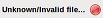

|
|
|
|
This function allow to import bank file or other personal accounting software file.
Notice: the CSV file you can uses into HomeBank must follow some rules detailed here
From the main window:
This step is a simple introduction page
You must select a file here, HomeBank will tell you if you can import that file or not:
If the file is supported:
If the file is not supported:

In this section, you have information about the file you just selected for import.
The name of the file is recalled, and you'll also have a count of items contained in that file, such as the number of accounts, transactions, payees and categories.
In this section, you control the accounts to be imported.
Generally, with the files in QIF and OFX format, HomeBank merge the new transactions to already existing accounts. However, some QIF or all CSV files have no information that will identify the account to import to, and you will manage it manually.
HomeBank is based on the account number to identify accounts of import files and compares them to those already existing, as well you should update this information carefully in existing accounts.
In this section, you control the transactions to be imported.
HomeBank is to detect the duplicate of each import transaction. A dual operation is visually indicated by a symbol in the list and is in disabled state, which means it will not be imported. The transactions or duplicated are listed in the "Duplicate transaction found".
You can change the parameters to find those duplicates in real time. The detection is done in the following order: account, amount, and date according to the defined tolerance (default is 0 days).
This last step will show the synthesis of which will be imported.
The number of accounts to be imported and / or updated.
The number of transaction to be imported, rejected and the one for which automatic assignment was done for payee and/or category.